Aide Eclipse¶
Durant les TP, nous allons utiliser l'IDE Eclipse pour réaliser des programmes Java.
Cet outil est à la fois puissant et complexe, cette page regroupe des trucs et astuces sur son utilisation.
Créer un programme Java dans Eclipse et l'executer¶
Vous lancez Eclipse avec le raccourci en bas à gauche. Vous obtenez alors ceci :
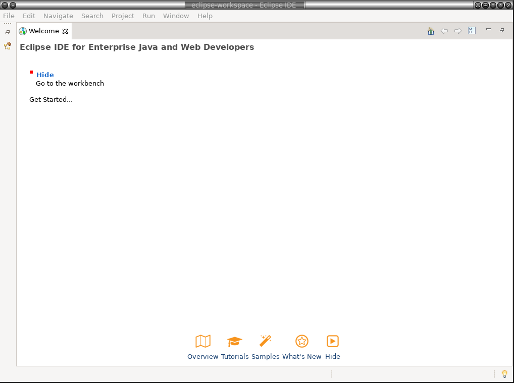
Vous faites alors File / New / Projet ... , vous obtenez ceci
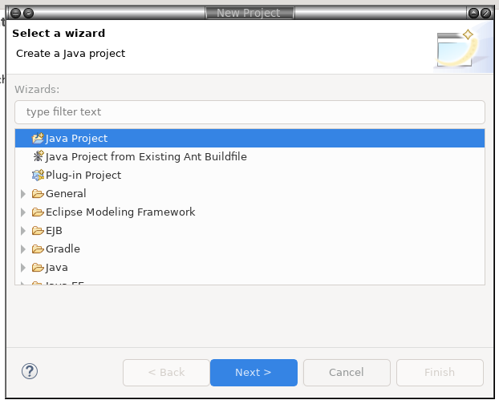
Vous sélectionnez Java Project puis Next , vous mettez essai1 par exemple dans Project Name et vous décochez la case "Create module-info.java file". Vous obtenez ceci :
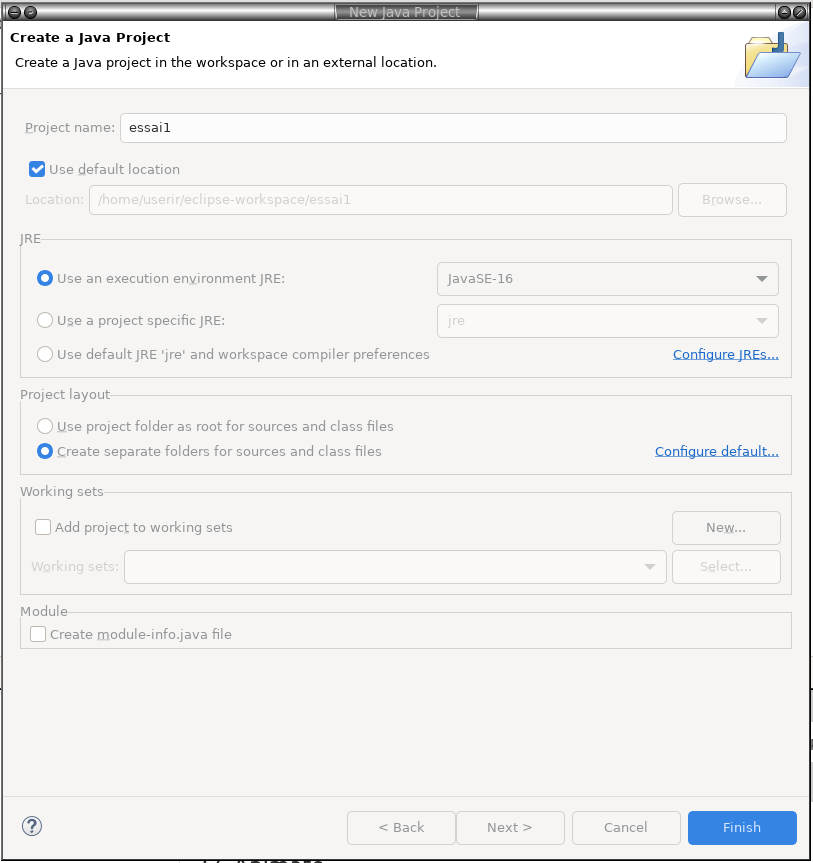
Ensuite vous faites Finish. Vous obtenez alors la question suivante
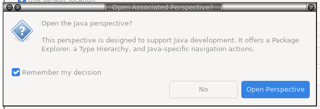
Vous répondez "Open perspective" et vous obtenez :
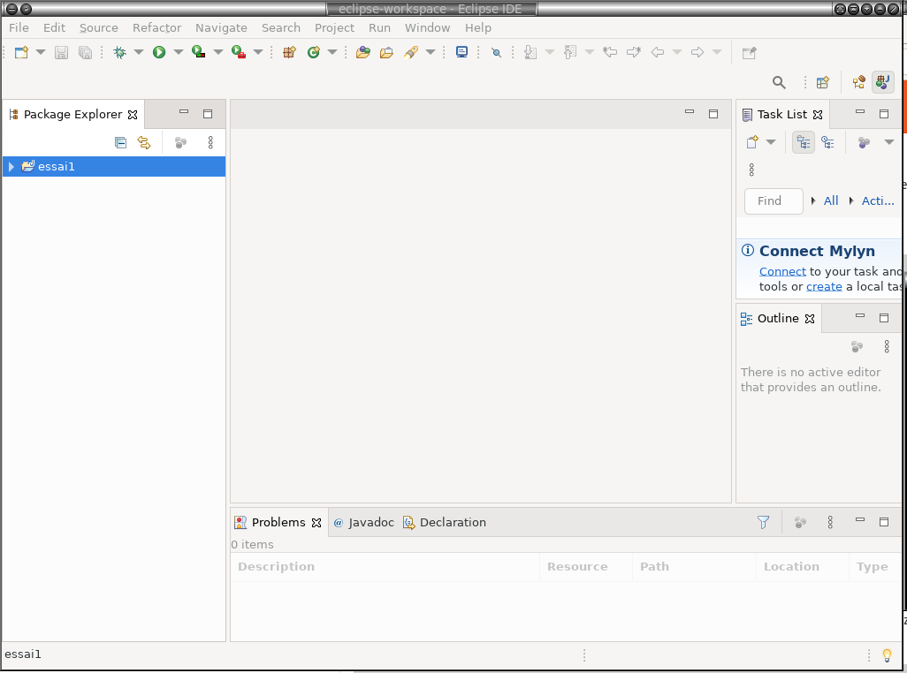
Ensuite vous cliquez sur votre projet essai1, puis vous vous faites clic droit New -> Class
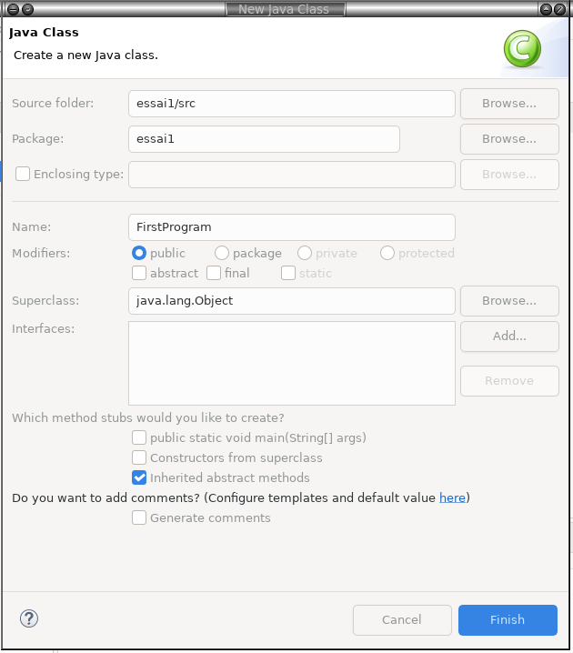
Vous saisissez le nom de votre classe (par exemple FirstProgram), puis vous faites Finish. On obtient
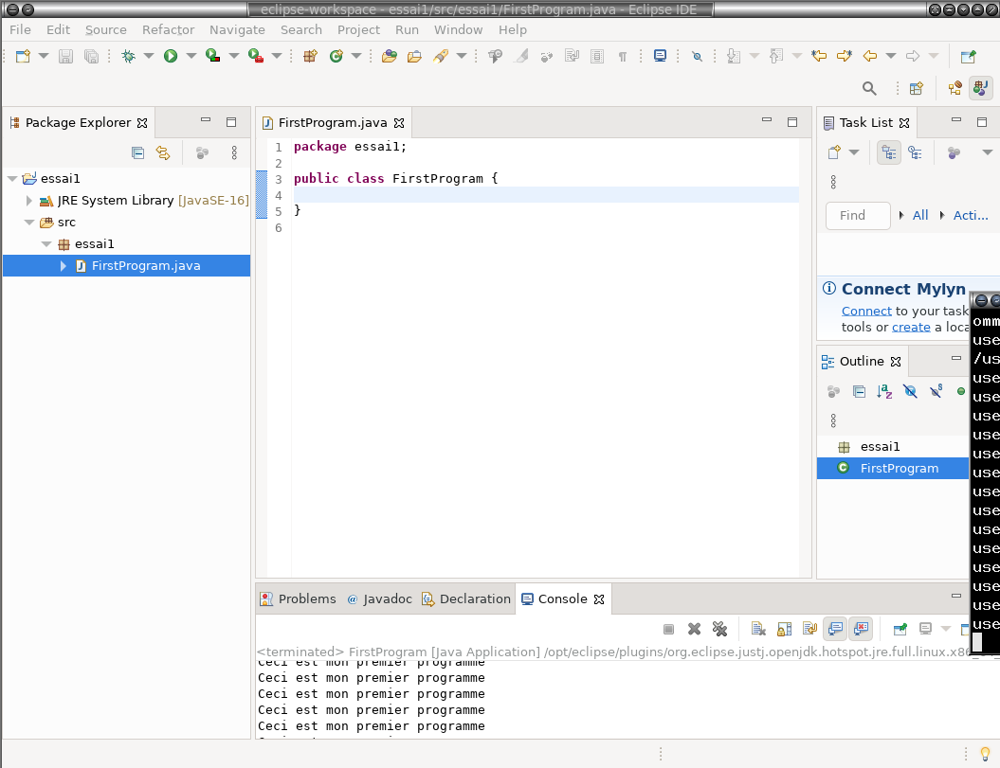
Vous saisissez votre code :
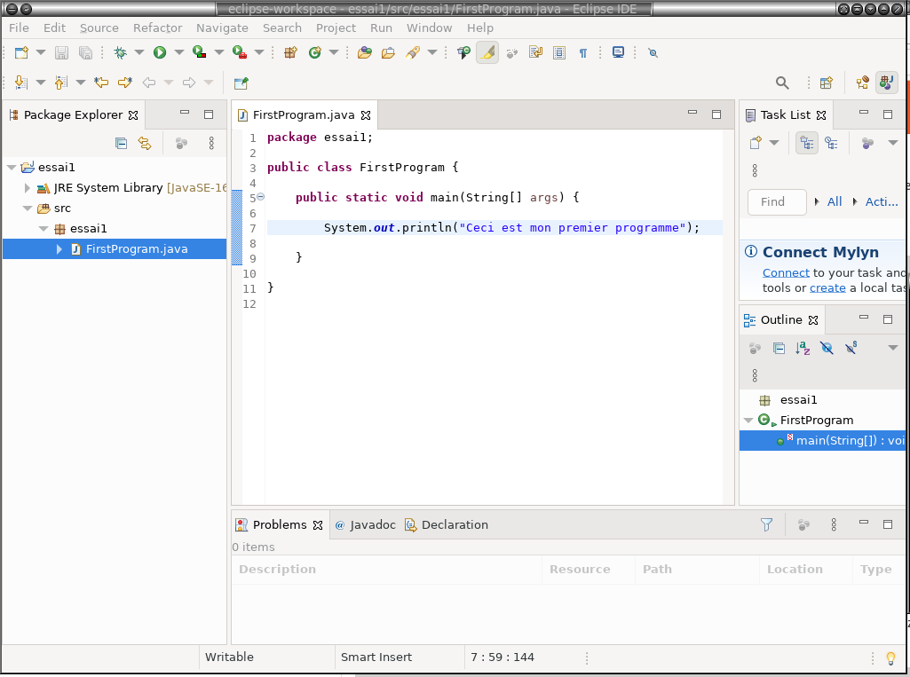
Pour executer votre programme, vous faites clic droit sur votre classe FirstProgram, puis vous faites Run as ... / Java Application
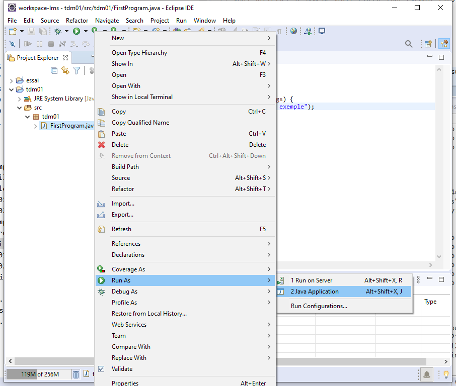
Votre programme se lance alors, et vous voyez le résultat dans la console
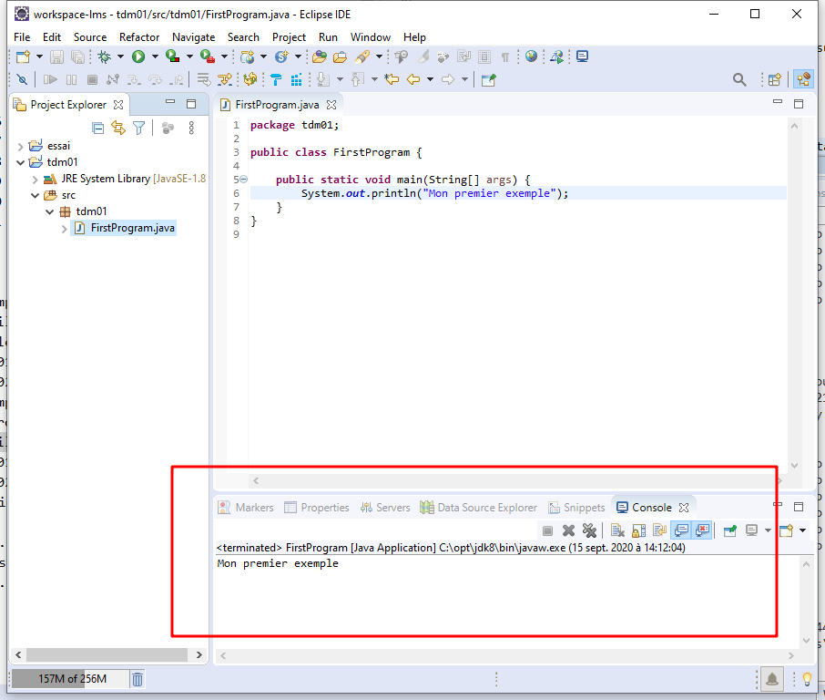
Voir tous les programmes lancés - les stopper¶
Quand vous lancez un programme, celui ci s'execute jusqu'à la fin ou jusqu'à ce que vous l'arrêtiez. Vous pouvez suivre son évolution dans la console
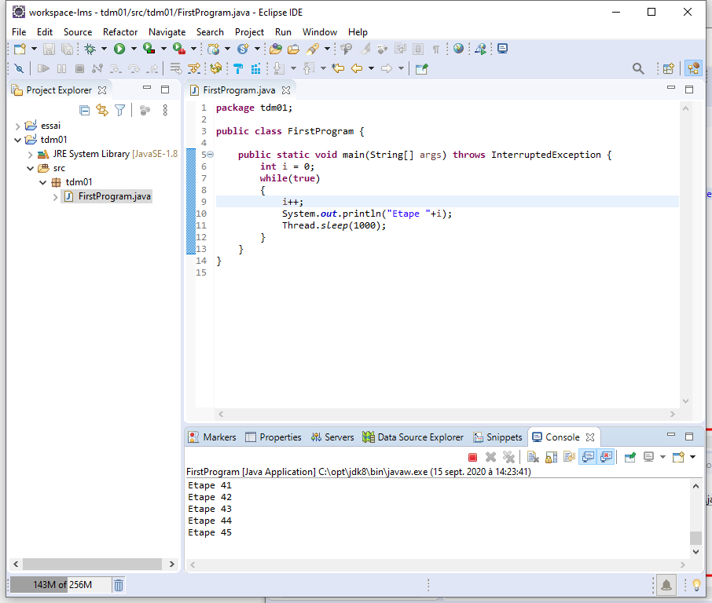
Pour arrêter un programme, il faut cliquer sur le carré rouge dans la console
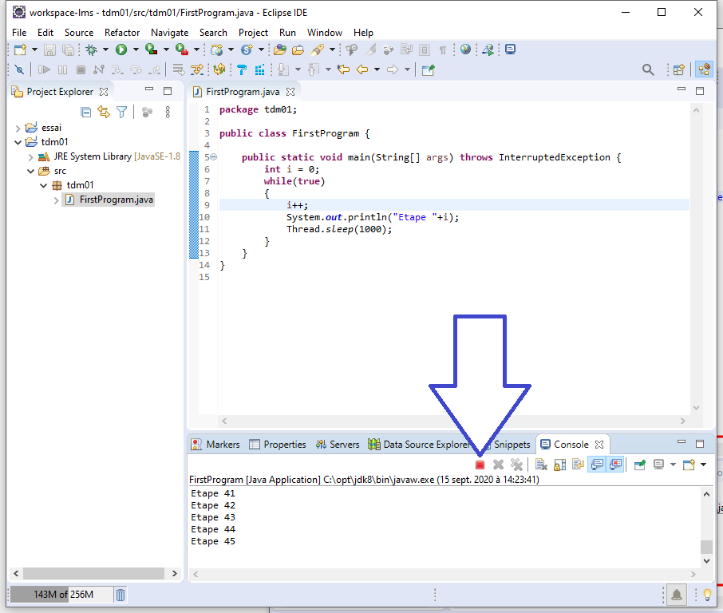
Pour voir tous les programmes lancés, il faut cliquer sur la fléche vers le bas à côté du pictogramme "moniteur"
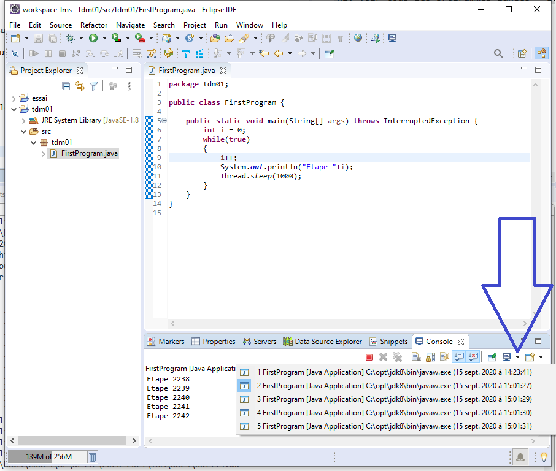
On voit alors la liste de tous les programmes en cours d'exécution (dans cet exemple, il y a 5 programmes en cours d'exécution )
Pour stopper tous les programmes en cours, il faut faire clic droit dans la console, puis "Terminate / Disconnect all"
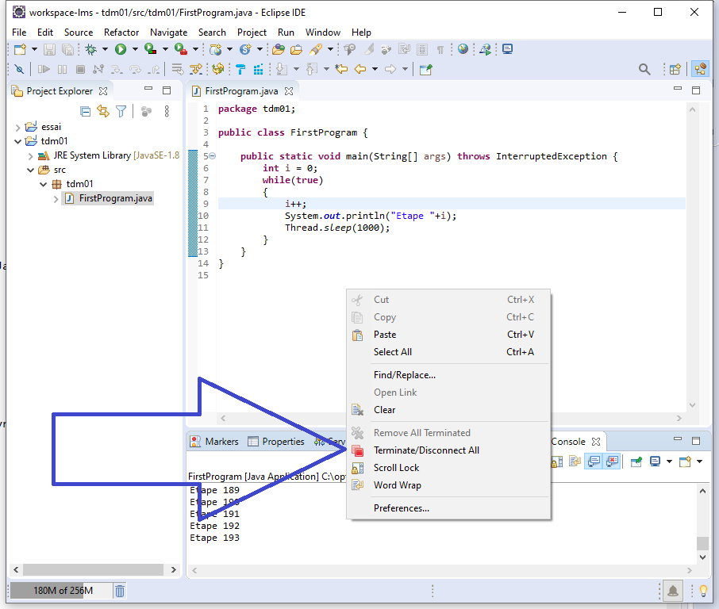